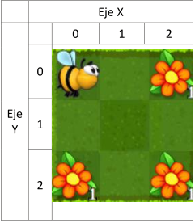

Ejercicios
Tema 1
Ejercicio 1
Comienza un proyecto nuevo en NetBeans llamado “U1.E1.Abeja”. A continuación, crea una nueva clase Abeja. Ve a Moodle y copia el código de la clase Abeja que encontrarás colgado.
A continuación, debes crear una clase PruebaAbeja2 que, teniendo en cuenta la imagen que se muestra en la siguiente página, realice las siguientes operaciones:
1. Defina y cree un objeto de la clase Abeja
2. A continuación, la abeja debe volar, desplazarse a la posición (2,0), posarse y cambiar el número de cargas de néctar a 1.
3. La abeja debe repetir la operación anterior pero ahora irá a la posición (2,2) y cambiará el número de cargas de néctar a 2.
4. La abeja repite la operación anterior pero ahora pasará por la flor de la posición (0,2) y cambiará el número de cargas de néctar a 3.
5. Por último, la abeja debe imprimir el valor de sus propiedades haciendo uso de los métodos imprimeXXX()
Ejercicio 2
Se desea comenzar un nuevo proyecto llamado U1.E2.Bombilla que codifique la clase Bombilla siguiendo las siguientes especificaciones:
| Bombilla | +marca: texto +potencia: entero +encendida: lógico |
Soluciones
Paginas de interes
https://www.w3schools.com/
https://color.adobe.com/es/create/color-wheel
https://github.com/
“Measuring programming progress by lines of code is like measuring aircraft building progress by weight.” Bill Gates
“Any fool can write code that a computer can understand. Good programmers write code that humans can understand.” Martin Fowler
“Good code is its own best documentation. As you’re about to add a comment, ask yourself, ‘How can I improve the code so that this comment isn’t needed?” Steve McConnell